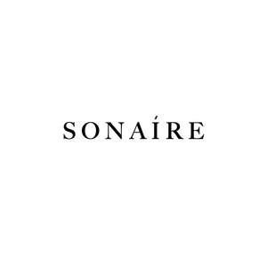

Trade Mark Journal No.2025/031 1 August 2025
UK00004234777 16 July 2025 (18,25)
Mark 1
SONAIRE
Mark 2

- Class 18
- Bags; Tote bags; Luggage bags; Duffle bags; Carry-on bags; Toiletry bags; Bags for clothes; Carry-all bags; Cross-body bags; Luggage, bags, wallets and other carriers; Leather bags; Sling bags; Canvas bags; Travel bags; Bags for travel; Gym bags; Duffel bags; Crossbody bags; Duffel bags for travel; Bags [envelopes, pouches] of leather, for packaging; Bags [envelopes, pouches] for packaging of leather; Travelling bags; Cabin bags; Flight bags; Traveling bags; Overnight bags; Beach bags; Wash bags for carrying toiletries.
- Class 25
- Clothing; Knitwear [clothing]; Jackets [clothing]; Ready-to-wear clothing; Woolen clothing; Furs [clothing]; Garments for protecting clothing; Layettes [clothing]; Linen clothing; Gloves [clothing]; Gloves as clothing; Clothes; Jerseys [clothing]; Denims [clothing]; Shorts [clothing]; Cashmere clothing; Leather clothing; Clothing of leather; Leather (Clothing of -); Silk clothing; Collars [clothing]; Parts of clothing, footwear and headgear; Knitted clothing; Windproof clothing; Belts [clothing]; Belts for clothing; Waterproof clothing; Rainproof clothing; Casual clothing; Jackets being sports clothing; Stuff jackets [clothing]; Jackets (Stuff -) [clothing]; Bottoms [clothing]; Clothing for leisure wear; Latex clothing; Trunks being clothing; Clothing for sports; Sports clothing; Athletic clothing; Clothing for children; Tops [clothing]; Beach clothing; Men's clothing; Shirts; Leisure clothing; Water-resistant clothing.
BROJAN CLOTHING LTD